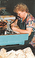

|
Manufacturer of Kolonok™ art brushes
Artistic Brushes Enterprise (founded in 1937) is the oldest and largest factory
in Russia manufacturing artistic brushes. Longstanding experience, traditions
and skills kept and passed on from generation to generation by masters' dynasties
- that is the secret of the highest quality of our products.
Our brushes have been appreciated in many countries of the world
- France, Belgium, Germany, UK, Canada and the USA.
Russian artists themselves come to our enterprise to meet the people
who produce those perfect brushes for their creative work.
Every ABE brush has logo:
golden squirrel on it and a number which corresponds
to the diameter of the hair for a round brush
and to the width of the hair for a flat one.
 Main Facts about the Artistic Brushes Enterprise Artistic Brushes Enterprise is located in the Eastern part of Russia and perfectly positioned to buy the finest quality Kolinsky sable hair from Siberian Kolinsky sable hunters. The hair refinement process is one of the best in the world. The main challenge is to remove oil from the hair. Not many manufacturers have mastered it. Since Artistic Brushes Enterprise has been in business for 65 years working almost exclusively with the natural hair brushes, the refinement process has developed to its highest standards. All Kolonok artist brushes are hand crafted by the leading brush specialists. Our Kolinsky Sable art brushes are 100% pure Kolinsky Sable hair brushes. 60% male Kolinsky Sable tail hair is blended with 40% of the female Kolinsky Sable tail hair. Our
manufacturer also produces Siberian Squirrel, Japanese Synthetics, and
Bleached Bristle art brushes.
Hair for the Siberian Squirrel art brushes comes from Siberia (Russia),
synthetic fiber for the Synthetics art brushes is imported from Japan.
Nickel ferrules are imported from Germany, wooden handles are made
by our manufacturer.
We can produce any art brush according to your detailed specifications.
It is even better if you could send us a sample.
Private labels are available only for large orders.
|